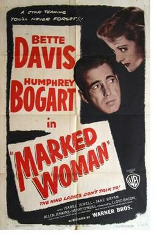

Marked Woman
Starring: Bette Davis, Humphrey Bogart, Mayo Methot
Director: Lloyd Bacon, Michael Curtiz
Writer: Robert Rossen, Seton I. Miller
Marked Woman is a 1937 American crime drama film directed by Lloyd Bacon and starring Bette Davis and Humphrey Bogart, with featured performances by Lola Lane, Isabel Jewell, Rosalind Marquis, Mayo Methot, Jane Bryan, Eduardo Ciannelli and Allen Jenkins. Set in the underworld of Manhattan, Marked Woman tells the story of a woman who dares to stand up to one of the city's most powerful gangsters.
Trivia
- Despite a disclaimer at the start of the film that asserts that the story is fictitious, Marked Woman is loosely based on the real-life crime-fighting exploits of Thomas E. Dewey, a Manhattan district attorney who became a national celebrity in the 1930s because of his fight against organized crime in New York City.
- Dewey indicted and convicted several prominent gangsters, and his greatest achievement was the conviction of Lucky Luciano, the organized crime boss of the entire city.
- Dewey used the testimony of numerous call girls and madams to convict Luciano of running one of the largest prostitution rings in American history.
Previous Showings
6 Runs • 3 Festivals
Original Billings: 1 run (April 22, 1937)
Original Run: April 22, 1937 (Thursday - Saturday)
All runs on record (6):
- April 22, 1937 (Thursday - Saturday)Bette Davis, Humphrey Bogart
- November 14 - 16, 1997w/ The Petrified Forest
- May 17 - 18, 2008w/ Dangerous
- February 10 - 11, 2011Winter 2011 Early Bette Davis, Val Lewton and morew/ The Girl from 10th Avenue
- September 5 - 6, 2017Warner Brosw/ Black Legion
- May 17 - 18, 2018Bette Davis Complete early films: 1931 - 1938w/ Dangerous